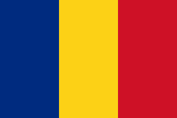

Suveranitate și influență sovietică în România (1944–1989) + ecouri post-1989
Suveranitate și influență sovietică în România (1944–1989) + ecouri post-1989
„Acest studiu e o oglindă: nu ca să ne judecăm trecutul, ci ca să înțelegem prezentul. Genul de oglindă care nu te umilește, ci te trezește: îți arată ce a costat, ce s-a ascuns, ce s-a negociat și ce am moștenit.”

Suveranitatea se plătește scump: vieți omenești, resurse, generații.Material educațional. Formulările sensibile sunt atribuite explicit surselor și marcate ca atare.
1. Prizonierii de război români în lagărele sovietice
1.1. Numărul și repatrierea prizonierilor
În timpul celui de-Al Doilea Război Mondial, peste o jumătate de milion de militari și civili români au fost luați prizonieri de către sovietici (romania-actualitati.ro). Valul principal de capturări a avut loc după dezastrul de la Stalingrad (sfârșitul anului 1942) și mai ales după august 1944, când România a întors armele împotriva Axei (romania-actualitati.ro).
Conform Marelui Stat Major Român, la sfârșitul războiului 367.976 de militari români erau declarați dispăruți (majoritatea prizonieri): 309.533 pe frontul de est (contra URSS) și 58.443 pe frontul de vest. (romania-actualitati.ro). După armistițiul din 12 septembrie 1944, Armata Roșie a continuat să dezarmeze și să deporteze efective române, ridicând alți aproximativ 97.700 de prizonieri dintre militarii români pe care îi întâlnea (ro.wikipedia.org). O parte au fost repatriați încă din 1945 – cca 61.662 potrivit datelor oficiale sovietice – iar alții (~20.400) au fost organizați de URSS în divizii de voluntari precum „Tudor Vladimirescu” și „Horia, Cloșca și Crișan”, folosite ulterior în noua armată a României comunizate (ro.wikipedia.org). Cu toate acestea, la finele lui 1945 peste 50.000 de prizonieri români încă se aflau pe teritoriul URSS (ro.wikipedia.org). Procesul de repatriere a continuat anevoios până la mijlocul anilor ’50, ultimii prizonieri fiind eliberați abia în 1954–1956, după moartea lui Stalin. În total, pierderile umane au fost enorme: potrivit unei liste oficiale publicate în 2020 de Ministerul de Externe, 20.718 de prizonieri de război români (militari) și civili deportați nu s-au mai întors niciodată, fiind consemnați ca decedați între 1941–1956 în lagăre, spitale sau batalioane de muncă forțată sovietice (bzc.ro).
1.2. Condițiile detenției și mortalitatea
Prizonierii români au fost internați într-o rețea extinsă de lagăre administrate de NKVD (Ministerul de Interne sovietic), care i-a tratat ca pe o sursă de mână de lucru gratuită pentru economia devastată a URSS (romania-actualitati.ro). Un regulament din 1942 prevedea explicit folosirea tuturor prizonierilor apți de muncă în industrie, transporturi, agricultură și construcții (romania-actualitati.ro). Realitatea din lagăre era însă sumbră: deținuții erau concentrați în colonii de muncă grea – mine, exploatări forestiere, șantiere industriale – în condiții climaterice extreme și cu hrană insuficientă. Mărturii ale supraviețuitorilor descriu ierni cumplite în Siberia, cu temperaturi de până la –70°C, viscole care doborau oamenii și impuneau mersul legați cu frânghii ca să nu fie spulberați de vânt (romania-actualitati.ro). Verile, în schimb, aduceau roiuri nesfârșite de țânțari și insecte care îi devorau pe prizonieri, obligând autoritățile lagărului să distribuie măști și mănuși de plasă pentru a-i proteja pe muncitori (romania-actualitati.ro). Munca era istovitoare: de pildă, în minele de cobalt unde au fost trimiși unii români, norma zilnică era să împingi manual 11 vagonete a câte 1,5 tone pe distanțe mari, în galerii pline de praf toxic și gaz, cu riscul constant al surpărilor (romania-actualitati.ro). Hrana consta în general dintr-o porție de 1 kg de pâine neagră (din orz prost cernut, umedă și predispusă să mucegăiască rapid) și din terciuri apoase (cașa) sau supe sărace; pentru a preveni scorbutul, 250 g din rația de pâine erau amestecate cu o drojdie specială, dar eficacitatea era îndoielnică (romania-actualitati.ro). Malnutriția severă a dus la cazuri masive de scorbut – un fost prizonier relatează că el și “mulți alții” și-au pierdut toți dinții din cauza deficiențelor alimentare din lagăr (romania-actualitati.ro). Nu este de mirare că mortalitatea a atins cote alarmante. Unele lagăre s-au transformat în adevărate zone ale morții, autoritățile sovietice fiind nevoite chiar să le închidă în fața catastrofei umanitare: de pildă, în lagărul de la Unja (reg. Gorki), unde fuseseră trimiși 2.500 de prizonieri (dintre care 1.339 români) la muncă silvică, în doar trei luni circa 600 au murit de epuizare și 1.500 ajunseseră în stare gravă de distrofie, ceea ce a dus la desființarea lagărului (romania-actualitati.ro). Un deznodământ similar a avut și lagărul Aktiubinsk, unde erau concentrați prizonieri români și germani într-o stare avansată de slăbire – și acesta fiind închis după ce numărul deceselor a explodat (romania-actualitati.ro). În alte centre, prizonierii români au îndurat detenții de durată: la lagărul Spassk nr. 99 (Karaganda, Kazahstan) au trecut peste 6.700 de români, dintre care 827 au murit acolo, fiind înhumați în cimitirele combinate ale lagărului(ro.wikipedia.org). Abia după 1953, pe fondul destinderii post-staliniste, supraviețuitorii rămași au fost repatriați integral.
1.3. Impact social și memorie
Drama prizonierilor de război a lăsat răni adânci în România postbelică. În plan demografic, pierderea a zeci de mii de bărbați tineri a afectat mii de familii – părinți îmbătrâniți care nu și-au mai văzut fii întorși de pe front, soții rămase văduve sau copii rămași orfani. În multe cazuri, incertitudinea a persistat ani la rând: familiile nu știau dacă cei dragi mai trăiesc în captivitate sau au murit, ceea ce a generat o traumă colectivă a “dispăruților”. Repatriații care totuși s-au întors (unii după 8-10 ani de lagăr) s-au confruntat cu sănătatea ruinată, traume psihice și uneori suspiciunea autorităților comuniste. Regimul instalat după război nu a încurajat discutarea deschisă a suferinței prizonierilor – subiectul era sensibil, deoarece punea într-o lumină negativă “eliberatorul sovietic”. Prin urmare, drama prizonierilor a fost multă vreme omisă din discursul public oficial, memoria lor supraviețuind mai mult în cercul familial și în relatările foștilor camarazi. În același timp, există și un impact politic indirect: aproximativ 20.000 de prizonieri români (voluntari recrutați sub supravegherea NKVD) au fost folosiți de Moscova pentru a constitui unități militare fidele noului regim – Diviziile „Tudor Vladimirescu” și „Horia, Cloșca și Crișan” (ro.wikipedia.org). Ofițerii și soldații din aceste divizii, reveniți în țară odată cu Armata Roșie, au format nucleul noii armate populare și al structurilor de putere comuniste, contribuind la preluarea controlului asupra României. Astfel, experiența prizonieratului a fost transformată de sovietici și într-un instrument de influență: unii supraviețuitori s-au reîntors “reeducați”, integrați în aparatul nou, ceea ce a amplificat percepția generală că lagărele sovietice nu au fost doar loc de suferință, ci și de indoctrinare. Abia după 1989, odată cu accesul la arhive și cu inițiative de recuperare istorică, s-a putut cunoaște pe deplin amploarea tragediei prizonierilor. Publicarea listei nominale a celor peste 20 de mii de morți în 2020 – rezultat al unui deceniu de cercetări în arhivele rusești – a fost considerată o adevărată premieră istoriografică și un gest de justiție morală față de acești dispăruți (bzc.ro).
2. Controlul sovietic asupra României (1944–1989): mecanisme politice, economice, militare și ideologice
2.1. Ocupația militară și Comisia Aliată de Control (1944–1947)
Influența URSS s-a instaurat plenar în România o dată cu intrarea Armatei Roșii, în urma loviturii de stat de la 23 august 1944. Armistițiul din septembrie 1944 a prevăzut înființarea unei Comisii Aliate de Control (CAC) pentru supravegherea aplicării clauzelor, însă în practică această comisie a fost dominată exclusiv de sovietici. Deși teoretic era un organism al Aliaților (URSS, SUA, Marea Britanie), realitatea de pe teren a făcut ca reprezentanții occidentalilor să fie marginalizați la rolul de „observatori tăcuți”, fără putere decizională ro.wikipedia.org ro.wikipedia.org . Conducerea Comisiei de Control din România a revenit direct comandamentului sovietic (mareșalul Rodion Malinovski), care a exercitat o autoritate deplină asupra tuturor problemelor economice, militare și politice ale țării ro.wikipedia.org . Sub umbrela CAC, sovieticii au emis ordine imperative guvernului român – de exemplu, în ianuarie 1945 au cerut arestarea și deportarea către URSS a etnicilor germani apți de muncă, ca despăgubire de război (măsură ce a afectat ~70.000 de oameni). De asemenea, autoritățile române au fost obligate să se conformeze oricărei instrucțiuni sovietice, inclusiv epurărilor din armată și administrație: unități întregi au fost demobilizate sau dezarmate, vechi instituții au fost desființate și repersonelate la ordinul Comisiei ro.wikipedia.org ro.wikipedia.org . În esență, ocuparea militară (care s-a prelungit până în 1958) a asigurat un cadru de forță pentru sovietizarea României, permițând Armatei Roșii și NKVD-ului să controleze direct ordinea internă în primii ani postbelici.
2.2. Mecanisme economice: SovRom-urile și jefuirea resurselor
Pe plan economic, dominația sovietică s-a exercitat prin instituirea unor societăți mixte româno-sovietice numite Sovromuri. Create imediat după război (primele în 1945) sub pretextul recuperării datoriilor de război ale României față de URSS, Sovromurile au acaparat sectoare-cheie ale economiei naționale: de la petrol (Sovrompetrol) și gaze, la metalurgie, exploatări forestiere, transporturi (Sovromtransport), ba chiar și film (Sovromfilm) ro.wikipedia.org . În total au funcționat peste 16 astfel de întreprinderi, care acopereau practic toate industriile strategice. Scopul real al Sovromurilor era controlul economic direct și **exploatarea la sânge a bogățiilor României de către URSS ro.wikipedia.org *. Un memoriu din epocă (1945) al academicianului Onisifor Ghibu descria plastic situația: sub masca prieteniei româno-sovietice, Sovromurile erau „un capitol al tragediei noastre” în care „se duc în Rusia cele mai de seamă bogății ale țării noastre, cu prețuri derizorii”, în timp ce în piețele din România lipsesc bunurile de bază sau sunt vândute intern la prețuri de zece ori mai mari ro.wikipedia.org . Practic, specialiștii trimiși de la Moscova au aservit economia României intereselor sovietice, facilitând transferul rapid și ieftin al petrolului, cerealelor, lemnului, uraniului (minerit în secret prin Sovromcuarțit ro.wikipedia.org ) ș.a. către URSS. Sovromurile au reprezentat cea mai durabilă și profitabilă formă de jaf organizat de către ocupantul sovietic în Europa de Est ro.wikipedia.org . De abia în 1954–1956, după ce regimul de “democrație populară” a consolidat sectorul socialist al economiei, Sovromurile au fost treptat lichidate – ultima, Sovromtransport, fiind cedată complet părții române în toamna lui 1956 ro.wikipedia.org . Însă până atunci pagubele fuseseră făcute: pe lângă resursele pierdute, anii de Sovromizare au generat inflație și penurie internă, contribuind la sărăcirea populației în anii ’40. Tot în contul despăgubirilor de război s-au înscris și demontările de fabrici și utilaje: sovieticii au ridicat și transportat în URSS echipamente industriale întregi (mai ales instalații petroliere și de transport), slăbind și mai mult economia postbelică ro.wikipedia.org . Prin aceste pârghii economice – despăgubiri, Sovromuri, comerț forțat în cadrul CAER (Consiliul de Ajutor Economic Reciproc, inființat în 1949) – România a fost integrată ca stat dependent în blocul răsăritean, direcțiile sale de dezvoltare fiind subordonate planificării sovietice. Un exemplu elocvent a fost tentativa lui Hrușciov din 1961 de a transforma CAER într-un organism supranațional de planificare: dacă România ar fi acceptat, ar fi fost obligată să renunțe la industrializare și să rămână doar furnizor de materii prime în cadrul blocului wilsoncenter.org . Bucureștiul a resimțit această inițiativă ca pe o amenințare directă la adresa suveranității economice.
2.3. Control politico-militar: Pactul de la Varșovia și trupele sovietice
Controlul politico-militar: Pactul de la Varșovia și prezența trupelor sovietice. La nivel geopolitic, Pactul de la Varșovia (semnat în mai 1955) a formalizat controlul militar sovietic asupra întregului „lagăr socialist” european. De facto, prin crearea Pactului, URSS și-a menținut influența în țările Europei de Est printr-o supraveghere militară strictă și unificat-organizată ro.wikipedia.org . Pactul prevedea cooperare militară și apărare mutuală, însă în practică Moscova avea comandă supremă asupra forțelor armate ale statelor membre. România, ca membru fondator, și-a subordonat doctrina de apărare strategiei sovietice, iar Armata sa a fost integrată planurilor comune ale Pactului. Merită amintit că principiile declarate de neintervenție și respect al suveranității statelor membre au fost încălcate flagrant de URSS când aceasta a decis intervenții armate împotriva unor țări-satelit care încercau să iasă de pe linie: Ungaria, 1956 și Cehoslovacia, 1968 ro.wikipedia.org . Simplul precedent al acestor invazii a atârnat mereu ca o sabie deasupra conducătorilor comuniști din celelalte state, inclusiv România, descurajând orice abatere prea mare de la voința Kremlinului. Pe teritoriul României, trupele sovietice de ocupație au staționat neîntrerupt între 1944 și 1958, constituind inițial un instrument direct de forță (în primii ani, soldații sovietici se comportau adesea ca pe un teritoriu cucerit, existând numeroase abuzuri asupra populației civile). După 1953, în contextul noilor relații din bloc, retragerea trupelor sovietice a devenit subiect de negociere: liderii români (Gheorghiu-Dej) au inițiat discuții discrete cu Hrușciov pe această temă încă din 1955 wilsoncenter.org . Retragerea efectivă s-a realizat în 1958, fiind percepută la București ca un succes al diplomației române (și ca un semn de încredere din partea URSS, care recompensa loialitatea arătată de România în timpul Revoluției maghiare din 1956) wilsoncenter.org . Chiar și după 1958 însă, umbrela militară sovietică plana deasupra României: la nevoie, diviziile sovietice staționate în Ucraina (și în RSS Moldovenească, peste granița Prutului) puteau reintra rapid în țară wilsoncenter.org . În plus, Tratatul de la Varșovia obliga oricum România să permită tranzitul forțelor aliate pe teritoriul său în caz de conflict; de altfel, contingente sovietice au tranzitat România în 1968, îndreptându-se către Cehoslovacia. Așadar, controlul militar sovietic a fost atât direct (până în ’58), cât și indirect, prin mecanismele alianței comuniste.
2.4. Influența ideologică și intervenții în viața internă
În paralel cu controlul politico-economic, URSS a exercitat o influență ideologică majoră în România între 1944–1960, menită să remodeleze societatea după modelul stalinist. În primii ani de după război, cenzura și propaganda oficială au fost strict aliniate directivelor de la Moscova: cultura și educația au fost epurate de “elementele burgheze”, s-a impus limba rusă ca limbă străină principală în școli, iar istoria a fost rescrisă în spiritul prieteniei româno-sovietice (minimizând episoadele conflictuale precum ocupația Basarabiei din 1940). Comisari sovietici au consiliat sau chiar condus din umbră instituții-cheie: NKVD/KGB a infiltrat și organizat nou-înființata Securitate (până la retragerea consilierilor, în 1964, ofițeri sovietici au activat la vârful serviciilor secrete românești) wilsoncenter.org . De asemenea, consilieri sovietici erau prezenți în Ministerul Apărării, Economiei și în aparatul de partid – cel puțin în anii ’50 – asigurând monitorizarea fidelității față de Moscova. Intervențiile directe ale URSS în politica internă românească s-au manifestat mai ales în epoca stalinistă: înlăturarea liderilor “deviaționiști” precum Ștefan Foriș (eliminat în 1944 cu gir sovietic) sau Lucrețiu Pătrășcanu (arestat și executat în 1954, după un proces în spiritul epurărilor sovietice) s-au făcut în concordanță cu dorințele Kremlinului. Totodată, trupe sovietice sau alți aliați sub comandă sovietică au fost folosiți în 1945–1946 pentru a intimida opoziția democratică din România – de exemplu, la alegerile din noiembrie 1946, prezența militară sovietică a permis fraudarea masivă în favoarea comuniștilor. URSS a exercitat presiuni și în chestiuni naționale sensibile: în 1945, Stalin a decis cedarea Transilvaniei de Nord înapoi României (după ce Ungaria hortystă o ocupase), dar și-a rezervat mereu acest subiect ca pe un potențial mijloc de șantaj. În 1964, de pildă, Hrușciov a amenințat voalat conducerea română cu revizuirea frontierelor în Transilvania, nemulțumit de poziția independentistă a lui Gheorghiu-Dej wilsoncenter.org . Un alt plan venit de la Moscova, așa-numitul “Plan Valev” (1964), propunea crearea unei regiuni economice transfrontaliere care să includă Moldova sovietică, estul României și o parte din Bulgaria – proiect primit ostil la București și denunțat public ca atingere la adresa suveranității wilsoncenter.org . Aceste imixtiuni arată că ori de câte ori România risca să se îndepărteze de linia trasată, Sovieticii interveneu, direct sau indirect, pentru a menține controlul: de la amenințări teritoriale și presiuni economice, până la scenariul extrem al unei intervenții militare colective (posibilitate reală în 1956 și 1968). Astfel, între 1944 și sfârșitul anilor ’50, România a fost practic un stat satelit, în care deciziile majore erau validate (sau impuse) de la Moscova. Abia ulterior, începând cu anii ’60, regimul de la București a explorat o anumită autonomie – un proces descris mai jos, însă și acesta cu limite clar trasate de contextul geopolitic.
3. Evoluția suveranității României (1944–1989): între autonomie și dependență
După 1960, pe fondul destinderii și al conflictului chino-sovietic, România a parcurs o distanțare treptată față de tutela directă a URSS, încercând să-și afirme suveranitatea națională chiar în interiorul blocului comunist. Acest proces a cunoscut câteva momente de vârf – retrageri simbolice, declarații de independență politică, gesturi de frondă – însă a avut și limite obiective, dincolo de care regimul de la București nu a trecut.
3.1. 1958: retragerea trupelor sovietice
Retragerea trupelor sovietice (1958) – un prim pas spre recâștigarea suveranității. După cum am menționat, la 24 mai 1958 ultimele unități militare sovietice au părăsit oficial România. Această retragere, obținută pe cale diplomatică de Gheorghe Gheorghiu-Dej, a avut un impact psihologic major asupra conducerii române: pentru întâia oară după 14 ani, țara nu mai avea armate străine pe teritoriul său, ceea ce a dat liderilor comuniști de la București un sentiment de concesie câștigată de la Moscova wilsoncenter.org . Evident, România rămăsese strâns legată de blocul sovietic (geografic era înconjurată de state Pactul de la Varșovia, iar la granițe se aflau mari unități sovietice gata de intervenție în caz de „urgență” wilsoncenter.org ). Totuși, Dej a interpretat retragerea trupelor ca pe o oportunitate de a începe, cu prudență, politici orientate prioritar spre interesul național și nu automat conform liniei sovietice wilsoncenter.org wilsoncenter.org . În anii ce au urmat, regimul de la București a devenit vizibil mai activ în a-și contura o voce distinctă în lagăr, dar și reactiv la anumite inițiative sovietice percepute ca amenințătoare (precum Planul CAER din 1961 de limitare a industrializării României wilsoncenter.org
3.2. 1964: declarația PMR (aprilie 1964)
Un moment crucial al autonomiei l-a constituit Declarația din 1964 a Partidului Muncitoresc Român (PMR, viitorul PCR). Contextul era oferit de disputa ideologică tot mai acută dintre URSS (Hrușciov) și China maoistă. Conducerea română a exploatat această divergență: Dej a adoptat formula chineză a “egalității în drepturi a tuturor statelor socialiste” pentru a justifica refuzul dictatelor economice sovietice și propriul drum independent wilsoncenter.org . După numeroase fricțiuni și presiuni (inclusiv amenințarea cu Transilvania și faimosul Plan Valev denunțat public), s-a decis consfințirea publică a poziției autonome. Pe 22 aprilie 1964, ziarul Scînteia a publicat documentul intitulat „Declarație cu privire la poziția PMR în problemele mișcării comuniste internaționale”, care afirma răspicat dreptul fiecărei țări socialiste de a-și alege calea proprie, fără ingerințe externe wilsoncenter.org wilsoncenter.org . Declarația echivala cu o adevărată proclamare a independenței politice față de Moscova, subliniind că internaționalismul proletar nu trebuie să anuleze suveranitatea națională. Mai mult, România respingea explicit ideea unei „diviziuni internaționale a muncii” impuse de CAER (care i-ar fi rezervat un rol agrar) și cerea respect reciproc în relațiile dintre partidele comuniste. Această poziție a fost primită cu stupoare la Kremlin, dar conjunctura era de partea românilor: Hrușciov se afla în dificultate în 1964, izolat de conflictul cu China și confruntat cu propriile probleme interne. Schimbarea conducerii de la Moscova în octombrie 1964 (debarcarea lui Hrușciov) a venit mănușă pentru Dej, care a acționat rapid – a solicitat retragerea consilierilor KGB rămași în România. Potrivit istoricului Ion Mihai Pacepa, Dej l-a convocat pe noul ambasador sovietic la 21 octombrie 1964 și i-a cerut retragerea imediată a ofițerilor consilieri sovietici din Securitate wilsoncenter.org . După negocieri ce au durat până în decembrie, Kremlinul a acceptat și toți consilierii KGB au părăsit țara (luând cu ei și arhivele și mobilierul din birourile ocupate, după cum consemnează sursele vremii) wilsoncenter.org . România devenea astfel prima țară din Pactul de la Varșovia al cărei aparat de informații nu mai avea “ofițeri de legătură” sovietici în structura de comandă – un fapt fără precedent până în 1989 wilsoncenter.org . (Desigur, colaborarea cu KGB nu a încetat complet, însă controlul direct a fost înlăturat.)
3.3. Epoca Ceaușescu: apogeul autonomiei – 1968: poziția României față de invazia Cehoslovaciei
Succesorul lui Dej, Nicolae Ceaușescu, a continuat și amplificat politica de emancipare față de Moscova. Momentul definitoriu a fost refuzul categoric al României de a participa la invazia sovietică în Cehoslovacia, în august 1968, urmat de condamnarea publică a intervenției. Pe 21 august, în fața mulțimilor adunate spontan în București, Ceaușescu a denunțat intervenția armată a Pactului de la Varșovia în Cehoslovacia ca „o mare greșeală” și o încălcare a principiilor de neamestec – o atitudine solitară în lagărul comunist (România a fost singura țară membră, alături de Albania, care nu a trimis trupe și a protestat deschis) wilsoncenter.org . Acest act de curaj politic i-a adus lui Ceaușescu un prestigiu enorm pe plan internațional și un val de simpatie internă, românii văzând în el un garant al independenței naționale în fața rușilor wilsoncenter.org . În culise însă, situația era extrem de tensionată: documente și mărturii ulterioare sugerează că la o reuniune restrânsă a liderilor Pactului, în iulie 1968 în Crimeea (la care Ceaușescu nu a fost invitat), s-ar fi discutat chiar invadarea României pe 22 august, la o zi după Cehoslovacia wilsoncenter.org . Această posibilitate a determinat conducerea de la București să ia măsuri de urgență: în chiar 21 august ’68 Ceaușescu a anunțat înființarea Gărzilor Patriotice – formațiuni de miliție populară înarmată, mobilizând sute de mii de cetățeni – și a ordonat Securității elaborarea unui plan de rezistență armată în caz de invazie wilsoncenter.org wilsoncenter.org . Planul (codificat „Rovine-IS-70”) prevedea organizarea unui război de guerilă generalizat pe tot teritoriul, cu retragerea lui Ceaușescu într-o locație secretă și eventual evacuarea sa în străinătate dacă rezistența eșua wilsoncenter.org . De asemenea, serviciul de informații externe (DIE) l-a avertizat pe Ceaușescu despre un posibil complot sovietic (Operațiunea “Dnestr”) de a-l înlocui cu un lider prosovietic, ceea ce l-a făcut și mai vigilent wilsoncenter.org . În final, invazia României nu a mai avut loc – în parte datorită reacției hotărâte și a negocierilor de culise dintre Ceaușescu și Brejnev. Episodul 1968 rămâne punctul culminant al autonomiei național-comuniste: România a sfidat pe față Moscova, consolidându-și imaginea de „dissident” al lagărului.
3.4. Limitele autonomiei
Beneficiind de aura căpătată, România lui Ceaușescu a continuat să se distanțeze de linia sovietică pe multiple planuri, mai ales în politica externă. Bucureștiul a fost primul din bloc care a stabilit relații diplomatice cu RFG (Germania de Vest) în 1967 și a refuzat să întrerupă relațiile cu Israelul după Războiul de Șase Zile (când toate celelalte state socialiste, la cererea URSS, au rupt legăturile). România a aderat la organisme economice globale precum GATT (1971), FMI și Banca Mondială (1972), căutând investiții și piețe în Occident wilsoncenter.org wilsoncenter.org . În 1975 a semnat Acordul de la Helsinki (CSCE) alături de statele NATO și Pactului de la Varșovia, angajându-se teoretic la respectarea drepturilor omului – alt gest care i-a sporit credibilitatea externă. Ceaușescu a cultivat relații strânse cu lideri occidentali (vizita președintelui american Nixon la București, în 1969, a fost prima vizită a unui șef de stat SUA într-o țară membră a Pactului de la Varșovia wilsoncenter.org wilsoncenter.org ). Mai târziu, în anii ’80, România s-a singularizat din nou condamnând invadarea Afganistanului de către sovietici (1979), criticând intervenția dură a Moscovei în criza poloneză (1981) și refuzând să boicoteze Jocurile Olimpice de la Los Angeles (1984) alături de restul țărilor comuniste wilsoncenter.org wilsoncenter.org . Toate aceste acțiuni au arătat o Românie ce poza în „rebel” relativ la blocul sovietic, încercând să joace un rol de punte între Est și Vest.
Limitele reale ale independenței. În ciuda aparenței de libertate de mișcare, independența României față de Moscova a avut tot timpul limite clar trasate. În plan intern, sistemul politic a rămas comunist, iar partidul de la București nu s-a abătut de la doctrina marxist-leninistă de bază. Un raport al Comisiei Prezidențiale pentru analiza dictaturii comuniste subliniază că ruptura de Kremlin din anii ’60 a însemnat în fond doar dreptul elitei locale de a decide ea însăși prioritățile, rămânând însă fidelă acelorași mituri leniniste și practicilor totalitare wilsoncenter.org . Cu alte cuvinte, regimul lui Gheorghiu-Dej și Ceaușescu a păstrat intact instrumentarul represiv și anti-democratic (cenzură, Securitate all-mighty, partid unic), doar că l-a folosit în mod național-autonom – dar nu mai puțin opresiv. Același raport concluzionează că devierea național-comunistă românească nu a pus niciodată în pericol real unitatea Blocului Sovietic wilsoncenter.org . Într-adevăr, România nu a încercat vreodată să iasă din Pactul de la Varșovia sau CAER; Ceaușescu, în pofida gesturilor de independență, și-a reafirmat mereu loialitatea față de cauza socialismului și chiar și-a bazat legitimitatea internă pe relația (de adversitate controlată) cu URSS. Merită menționat că regimul român a evitat să critique direct conducerea sovietică după 1968, cu excepția unor aluzii. Mai mult, în anii ’80 s-a produs o inversare a rolurilor: noul lider sovietic, Gorbaciov, a inițiat reforme liberale (perestroika, glasnost) pe care Ceaușescu le-a respins vehement, rămânând ultimul stalinist dur din bloc. Izolat de Moscova reformistă după 1985, Ceaușescu s-a trezit singur în rigiditatea sa, iar în 1989 URSS nu a mișcat un deget pentru a-l menține la putere. Aceasta arată încă o dată limita independenței: România era liberă să fie mai conservatoare decât Moscova, atâta vreme cât nu încerca să iasă din sfera ei de influență. De altfel, teama de o posibilă intervenție sovietică a fost folosită chiar de Ceaușescu ca justificare pentru menținerea unui control intern draconic: orice opoziție sau tentativă liberală era suprimată prompt, sub pretextul că “ar vulnerabiliza țara” și ar da ocazia rușilor să intervină. Astfel, independența proclamată a avut un paradox: a venit la pachet cu o dictatură internă poate chiar mai crudă, pe motivul apărării suveranității. Un alt aspect limitativ: în pofida deschiderilor vestice din anii ’70, economia României a rămas puternic dependentă de piața CAER și de resursele sovietice. Când Ceaușescu a dorit să elimine complet datoria externă în anii ’80, a recurs la exporturi masive de alimente și energie (inclusiv către URSS – de exemplu, în 1981 România a exportat 106.000 tone de carne către URSS wilsoncenter.org ). Această politică a generat foamete și austeritate acasă, arătând că în ultima instanță „independența” lui Ceaușescu s-a transformat în izolare economică de ambele părți – și Est, și Vest – cu costuri uriașe pentru populație.
În concluzie, între 1944 și 1989 România a pendulat de la statutul de satrapie sovietică (în primii ani postbelici) la cel de „copil rebel” al lagărului comunist (în anii ’60-’70). Au existat momente-simbol de autonomie: 1958 (fără trupe străine), 1964 (afirmarea principiului neingerinței), 1968 (sfidarea intervenționismului sovietic). Cu toate acestea, limitele independenței au fost mereu prezente: militare (amenințarea intervenției), ideologice (comunismul ca unic cadru admis), economice (legarea de CAER) și politice (regim autoritar de tip sovietic, chiar dacă naționalist). România nu a putut ieși din logica Războiului Rece decât odată cu prăbușirea întregului sistem sovietic.
4. Moșteniri ale comunismului în politica românească post-1989 – cazul PDSR
4.1. Continuități de cadre și instituții
Preluarea puterii de către eșalonul secund comunist în 1989. Căderea oficială a dictaturii comuniste în decembrie 1989 nu a însemnat și dispariția instantanee a vechilor structuri de putere. Dimpotrivă, revoluția anticeaușistă a fost imediat confiscată de un grup provenit în mare parte din aparatul secund al PCR, al UTC și chiar din Securitate și Armată putereaacincea.ro . În fruntea acestui grup s-a aflat Ion Iliescu, fost nomenclaturist de rang înalt (fost membru al CC al PCR, marginalizat de Ceaușescu în anii ’80) – el s-a prezentat drept revoluționar, însă era de fapt “emanația unei opoziții venite din interiorul sistemului, nu din societatea civilă”, după cum au observat analiștii vremii adevarul.ro adevarul.ro . Frontul Salvării Naționale (FSN), noua structură provizorie de putere anunțată la TV chiar pe 22 decembrie 1989, a fost compus în proporție covârșitoare din foști activiști comuniști, cadre UTC, ofițeri din armată și securiști reciclați. Potrivit investigațiilor de mai târziu, „în decembrie 1989, în proporţie de 80-90% puterea politico-militară din România a fost preluată de oameni care aparţineau de GRU şi KGB”, afirmă generalul (r) Cătălin Ranco Pițu, fost procuror militar însărcinat cu Dosarul Revoluției putereaacincea.ro . Acesta dezvăluie că imediat după 25 decembrie 1989 (după execuția lui Ceaușescu), noile autorități au reactivat nu mai puțin de 40 de generali din structurile armate și de securitate, „toți documentați ca fiind colaboratori ai GRU sau KGB” putereaacincea.ro . Cu alte cuvinte, o rețea ocultă de cadre vechi, cu legături în serviciile secrete sovietice, a acaparat pozițiile-cheie ale statului postrevoluționar. Un exemplu notoriu: generalul Mihai Caraman, fost spion comunist celebru (care în anii ’60 infiltrase comandamentul NATO, fiind decorat de KGB), a fost numit în 1990 director al nou-înființatului Serviciu de Informații Externe al României putereaacincea.ro . Practic, o „cârtiță” a URSS a ajuns să conducă spionajul țării tocmai ieșite din sfera sovietică – situație paradoxală ce ilustrează forța de continuitate a vechilor structuri. Aceste aspecte, care la vremea respectivă au fost ascunse opiniei publice, au ieșit la iveală abia peste decenii. Același procuror Pițu vorbește despre „rekaghebizarea” României imediat după revoluție – o victorie uluitoare a URSS, care și-a instalat într-o noapte colaboratorii în fotoliile noii puteri de la București putereaacincea.ro . „Oricărui serviciu secret îi sunt necesari mulți ani pentru a penetra cu un singur om vârful altui stat, însă la noi toată puterea statală s-a concentrat, peste noapte, în mâna unor trădători”, arată Pițu în rechizitoriul său, concluzionând că nu e de crezut că membrii acestei rețele s-au potolit apoi, ci mai degrabă și-au perpetuat influența putereaacincea.ro .
4.3. PDSR / PSD în tranziție
PDSR/PSD – continuități de cadre și practici. Din FSN-ul originar (fracturat politic în 1990-1992) s-a desprins Partidul Democrației Sociale din România (PDSR), condus de Ion Iliescu – formațiune care a dominat anii ’90 și a continuat ulterior ca Partidul Social Democrat (PSD). Istoric, PDSR/PSD a reprezentat vehiculul direct al vechii nomenklaturi în noua democrație. Dacă în primul mandat postdecembrist al lui Iliescu (1990-1996) s-a menținut o continuitate pervers rafinată a sistemului comunist, prin păstrarea în structurile de stat a numeroși foști activiști și ofițeri, anii următori au adus consolidarea unei oligarhii politico-economice moștenite din vechiul regim putereaacincea.ro . În administrația centrală și locală din anii ’90 regăsim adesea aceiași oameni care ocupaseră funcții și înainte de 1989 (doar că poate cu o generație mai tineri – “eșalonul doi”). De exemplu, presărarea de foști ofițeri de Securitate și militari din vechea gardă în serviciile reformatului SRI, în poliție, în justiție și în diplomație. Absența unei legi a lustrației a permis ca persoanele compromise sub regimul comunist să rămână sau să revină în poziții de putere. PDSR, autodefinit drept continuator al stângii, a cooptat rapid aceste rețele: s-a vorbit despre “baronii locali” – lideri județeni adesea proveniți din vechile structuri (foști prim-secretari de partid, foști șefi de CAP-uri sau directori ai întreprinderilor comuniste) – care au acaparat resursele locale după privatizări. “Nomenklatura regrupată” a știut să profite de tranziție, menținând un sistem transpartinic de complicități care a frânat reformele reale și a perpetuat corupția endemică putereaacincea.ro putereaacincea.ro . În esență, noul regim condus de Iliescu s-a prezentat drept artizan al democrației, dar deseori a sabotat democratizarea autentică, încercând să mențină România pe orbita vechilor metehne autoritare și chiar – spun unii analiști – în orbita de influență a Moscovei în primii ani putereaacincea.ro . Spre exemplu, politica externă a anilor 1990-1991 sub Iliescu a fost ambiguă: România a ezitat inițial în apropierea față de NATO și a semnat acorduri de cooperare cu URSS (chiar înainte de destrămarea acesteia). Doar presiunea publică și evoluțiile geopolitice au împins ulterior către integrarea euro-atlantică.
Pe plan intern, retorica și metodele folosite de FSN/PDSR în anii ’90 au reflectat adesea tipare comuniste: demonizarea adversarilor politici ca “dușmani ai poporului”, folosirea propagandei mass-media (televiziunea publică, controlată de FSN, a dus o campanie împotriva partidelor istorice în 1990, etichetându-le drept “fanariote” sau “fasciste”). Cea mai gravă manifestare a fost Mineriada din iunie 1990, când conducerea Iliescu a chemat mii de mineri să “restabilească ordinea” în București, aceștia devastând sediile partidelor de opoziție și bătând manifestanții pro-democrație din Piața Universității. Violențele extreme comise atunci – soldate cu cel puțin 6 morți și sute de răniți – au reamintit de practicile de forță ale dictaturii. Iliescu însuși le-a mulțumit public minerilor pentru “spiritul civic”, legitimând practic justiția populară violentă împotriva oponenților politici legitimi adevarul.ro adevarul.ro . Această abordare de tip “luptă de clasă” împotriva societății civile și a presei independente arată că reflexele vechiului regim au persistat la nivelul noii puteri. De altfel, un analist politic caracteriza tranziția românească sub Iliescu drept una în două viteze: spre deosebire de alte țări est-europene unde opoziția anticomunistă a preluat imediat puterea (ex: Polonia, Cehoslovacia), în România puterea a fost preluată de comuniști “transformați peste noapte în democrați”, ceea ce a făcut ca tranziția autentică să fie întârziată și deformată adevarul.ro adevarul.ro . Ion Iliescu a fost astfel simultan o “verigă de legătură” între vechiul și noul regim și un obstacol în calea unei democratizări reale, deoarece a folosit pârghiile vechiului sistem în slujba unui regim nou hibrid (formal democratic, dar subteran autoritar) adevarul.ro .
Rețele de putere și moșteniri până în prezent. Influența comunistă post-1989 se vede și în configurația structurală a unor instituții: de exemplu, SRI (serviciul intern de informații) a preluat în mare măsură personal și metode de la fosta Securitate, asigurând totodată “imunitatea” acesteia – foarte puțini ofițeri ai vechii Securități au fost trași la răspundere, iar dosarele lor au rămas multă vreme secrete. În armată, corpul de ofițeri superiori din anii ’90 era în bună parte același care jurase credință lui Ceaușescu – mulți generali formați la școli sovietice și trecuți prin filtrele de partid au rămas în funcții de conducere, asigurând o continuitate de mentalitate (în primele luni de după Revoluție, armata a fost folosită tot în scop de ordine internă, la Târgu Mureș în martie 1990 și apoi alături de mineri în iunie 1990). Justiția română a suferit și ea de “vechile metehne”: mulți magistrați formați profesional în comunism au perpetuat o cultură a obedienței față de politic, frânând reformele judiciare. În administrația publică, reflexul birocratic și centralist moștenit din comunism a continuat să domine – chiar dacă economia se liberaliza treptat, modul de funcționare al multor instituții (impunerea deciziilor de sus în jos, lipsa transparenței, controlul politic al numirilor) a rămas similar.
La nivelul discursului politic, se poate observa o filiație între național-comunismul anilor ’80 și anumite curente din anii 1990-2000. Partide succesoare ale FSN (precum PDSR/PSD, dar și PRM – Partidul România Mare, condus de un fost propagandist comunist, Corneliu Vadim Tudor) au folosit un populism etatist amestecat cu naționalism. Ion Iliescu însuși, deși un marxist declarat, nu a ezitat să folosească simboluri naționale pentru a-și legitima regimul (de exemplu, a cooptat foști generali ceaușiști naționaliști, a refuzat inițial colaborarea cu Ungaria pentru tratatul de bază din 1995 din considerente naționale etc.). În plus, retorica împotriva “agenților străini” sau a “exploatării străine” a fost uneori resuscitată în anii de tranziție, semănând cu propaganda ceaușistă târzie. Un alt aspect este “mitul salvatorului din interior” – Iliescu s-a prezentat ca un comunist reformat care va îndrepta excesele lui Ceaușescu, similar modului în care Ceaușescu însuși pozase la început (1965) drept continuator al lui Dej care va aduce “socialismul cu față umană”. Astfel de paralele arată cursivitatea narativelor din comunism în noua scenă politică.
Cu timpul, pe măsură ce generațiile s-au schimbat și integrarea euro-atlantică (NATO 2004, UE 2007) a impus standarde diferite, influența directă a foștilor comuniști s-a mai estompat. Însă moștenirea lor structurală a rămas vizibilă timp de peste trei decenii. Abia după anul 2004, când a avut loc alternanța clară la putere și emergența unor lideri neformați înainte de 1989, s-a putut vorbi de o desprindere mai accentuată de trecut. Chiar și așa, episoade recente – precum deriva autoritară încercată de conducerea PSD în perioada 2017-2019 (era Liviu Dragnea) – au trezit temeri privind întoarcerea la practici iliberale amintind de trecut. În acei ani, PSD (urmașul direct al PDSR) a promovat modificări legislative care slăbeau statul de drept și amenințau orientarea pro-occidentală a țării, generând îngrijorarea că România s-ar putea decupla de valorile europene și aluneca spre un regim autocratic, izolaționist și autarhic – “pe placul Puterii din Rusia” putereaacincea.ro . Cu alte cuvinte, fantoma vechiului regim (corupția endemică, tentația autoritară, rețelele oculte de influență) nu a dispărut complet, ci a evoluat adaptându-se noilor condiții.
Concluzie (Moștenirea comunistă în postcomunism)
.Anii de tranziție ai României au fost marcați de o puternică continuitate de personal și de mentalități între vechiul regim și noua ordine. Succesorii comuniștilor, grupați inițial în FSN sub conducerea lui Ion Iliescu, au folosit structurile moștenite pentru a-și asigura puterea și a întârzia decolonizarea reală de comunism observatorcultural.ro „Toxica moștenire comunistă și securistă” – cum a fost numită în evaluări recente – a făcut ca România să pornească pe drumul democrației “nu doar cu stânga, ci mai ales cu stângul” putereaacincea.ro, adică împovărată de trecut. Abia după trei decenii, prin procese precum condamnarea oficială a comunismului (Raportul Tismăneanu, 2006) și investigarea evenimentelor din 1989–1990 în justiție, societatea românească a început să se delimiteze ferm de acele reminiscențe. Istoria recentă confirmă însă că tranziția României a fost originală: am avut o revoluție anticomunistă urmată de un regim neo-comunist, fapt omis sau minimalizat multă vreme în discursul public oficial. Abia la sfârșitul lui 2024, trimiterea în instanță a Dosarului Revoluției a consfințit adevărul continuității – oferind confirmare oficială a acelor rețele de putere retrograde instalate în decembrie 1989 putereaacincea.ro putereaacincea.ro
< . În plan moral, judecata istoriei începe să-i ajungă pe artizanii acestor compromisuri: Ion Iliescu, liderul definitoriu al tranziției, rămâne figura controversată a „omului care a asigurat stabilitatea, dar a frânat schimbarea” – un simbol al legăturii dintre comunism și democrație și al dificultății României de a se rupe complet de propriul trecut autoritar adevarul.ro.
Surse citate: Documente și studii istorice despre prizonierii de război români în URSS: volum „Prizonieri de război români în Uniunea Sovietică. Documente 1941–1956” (coord. dr. Vitalie Văratic, 2013); Arhivele MAE (lista prizonierilor români decedați în URSS); articole Radio România Actualități, Wikipedia etc. romania-actualitati.ro bzc.ro Mecanismele controlului sovietic: Convenția de armistițiu (1944); Wikipedia – Comisia Aliată de Control, SovRom ro.wikipedia.org ro.wikipedia.org ; lucrări de istorie economică; memoriile lui Onisifor Ghibu ro.wikipedia.org ; Wikipedia – Pactul de la Varșovia ro.wikipedia.org . Suveranitatea și autonomia României comuniste: documente din arhiva digitală Wilson Center (telegrame, stenograme) privind relațiile România-URSS; analiza lui Dennis Deletant; Declarația PMR din aprilie 1964; lucrări precum Adrian Cioroianu, “Pe umerii lui Marx”; Raportul Final al Comisiei Prezidențiale (2006) wilsoncenter.org . Influențe post-1989: investigații jurnalistice (ex. Melania Cincea, Puterea a Cincea 2025) putereaacincea.ro putereaacincea.ro ; interviuri și analize politologice (ex. Adevărul, 2020) adevarul.ro ; Raportul Tismăneanu (2006) și literatura de specialitate despre tranziția postcomunistă (de ex. Lavinia Stan, “Romania’s post-communist transitional justice”, Tom Gallagher ș.a.). Note explicative: GRU (Glavnoe Razvedîvatelnoe Upravlenie) – serviciul de informații al armatei sovietice; KGB – serviciul civil de securitate și informații al URSS. Menționarea colaboratorilor GRU/KGB în contextul 1989 indică persoane din conducerea militară și a securității române care ar fi avut legături secrete cu aceste servicii. CAER (Consiliul de Ajutor Economic Reciproc) – organizație economică a țărilor comuniste, menită să coordoneze economiile statelor membre sub egida URSS. Valev – se referă la “Planul Valev” (după economistul sovietic Valev) din 1964 de creare a unei regiuni economice integrate sovieto-româno-bulgare în zona Dunării de Jos, considerat la București drept o tentativă de subminare a integrității economice și teritoriale. Minerida – termen ce desemnează incursiunile violente ale minerilor din Valea Jiului în București (iunie 1990, sept. 1991 ș.a.), îndreptate împotriva manifestațiilor anticomuniste și a guvernului de opoziție, și considerate a fi fost orchestrate politic de regimul Iliescu. PDSR – Partidul Democrației Sociale din România, denumirea sub care a funcționat între 1993–2001 principala formațiune de stânga succesoare a FSN. În 2001 a fuzionat cu PSDR (partid social-democrat istoric reînființat) și a devenit PSD (Partidul Social Democrat), denumire păstrată până azi.
Note
- RRA / Radio România (articol despre capturări și estimări). Link. ↩
- RRA / studiu citat despre „dispăruți” (Marele Stat Major). Link. ↩
- Sursă de sinteză (de preferat academică) despre capturări după armistițiu. Link. ↩
- MAE / listă publicată (2020) privind decese în captivitate/lagăre. Link. ↩
- Mărturii / memorialistică despre viața în lagăr (se recomandă minimum 2 surse). Link. ↩
- Volum documentar / studiu (ex. „Documente 1941–1956”). Link. ↩
- Sursă despre diviziile „Tudor Vladimirescu” / „Horia, Cloșca și Crișan” (preferabil istorie militară). Link. ↩
- Textul Convenției de Armistițiu (12 sept. 1944) – sursă primară. Link. ↩
- Studii despre SovRom (surse academice / volume de istorie economică). Link. ↩
- Pactul de la Varșovia + retragerea trupelor (studii / arhive). Link. ↩
- Colecții documentare (ex. arhive digitale) despre relațiile România–URSS. Link. ↩
- Studiu despre retragerea trupelor sovietice (1958). Link. ↩
- Declarația din aprilie 1964 (text + analiză). Link. ↩
- 1968 – surse de arhivă / studii despre poziția României. Link. ↩
- Raport / studiu (ex. Raport Comisie Prezidențială, 2006) despre natura regimului. Link. ↩
- Studii despre continuități postcomuniste (politologie/istorie). Link. ↩
- Investigație jurnalistică + eventual document oficial (recomand: link la actul original dacă există public). Link. ↩
- Cronologia FSN–FDSN–PDSR și analiză politologică. Link. ↩